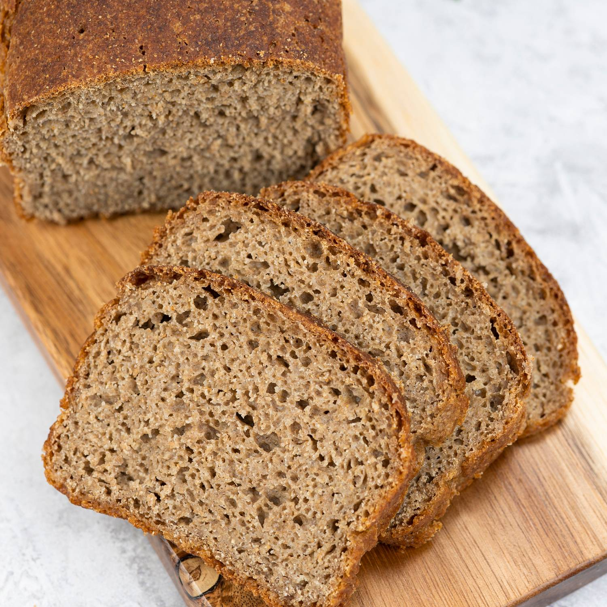
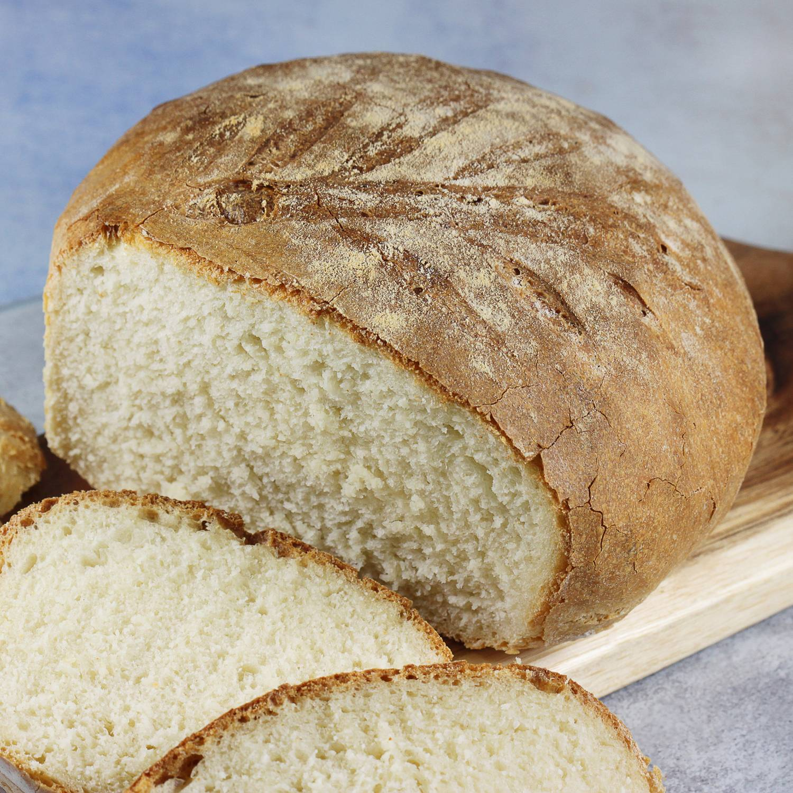
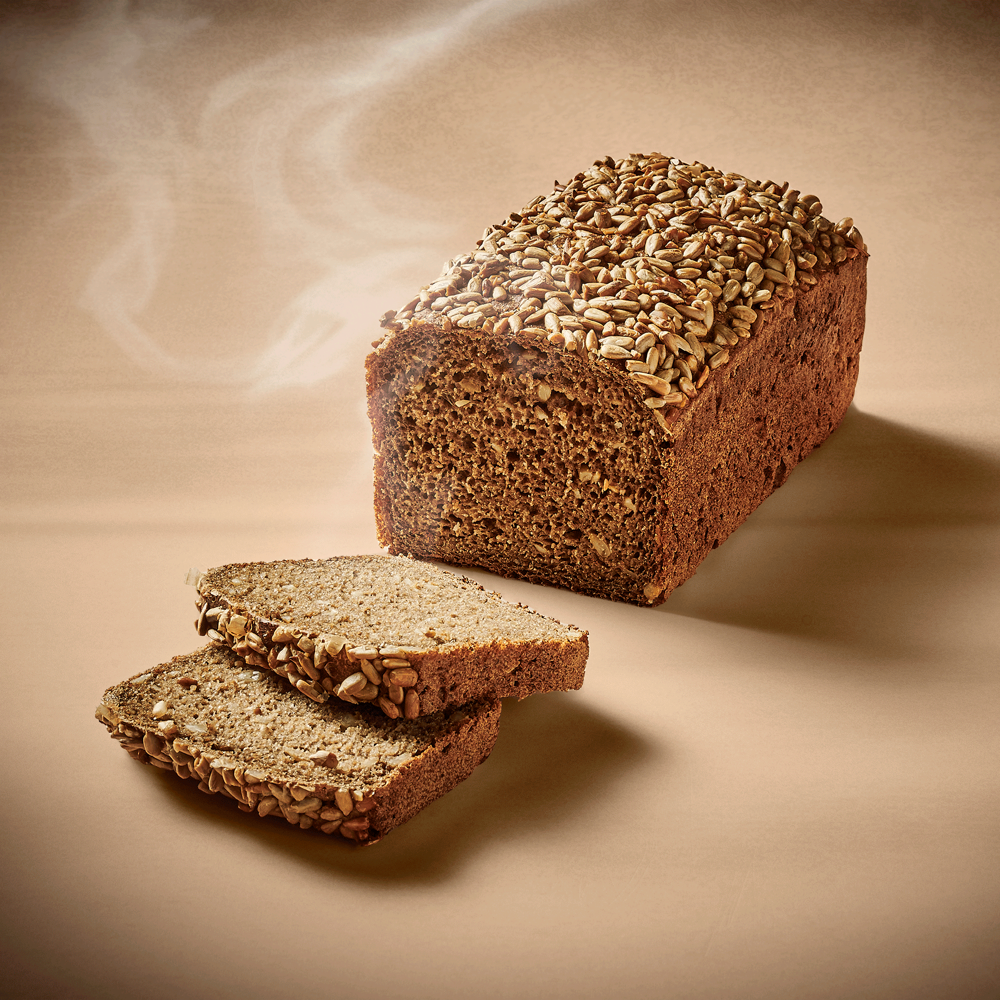

Chleby
Istnieje dużo rodzaji chleba. Więc chciałbym się podzielić na tej stronie kilkoma rodzajami chleba!
Chleb żytni
Chleb żytni jest wypiekany z mąki zbożowej uzyskanej z żyta.

W porównaniu z chlebem pszennym chleb żytni ma ciemniejszy kolor i jest bardziej zbity. Wytwarzany jest głównie z mąki żytniej, wody i soli. Chleb żytni zawiera również drożdże lub zakwas, które pomagają w procesie fermentacji
Chleb razowy
Chelb razowy to odmiana chleba wypiekanego z pszennej, żytniej lub mieszanej mąki razowej, tzn. z wyprodukowanej przez jednorazowe grube zmielenie ziarna, zawierającej otręby i mającej ciemniejsze zabarwienie niż mąka „biała”, tj. przesiewana.

Produkowany bywa także chleb z mąki razowej i białej.
Chleb słonecznikowy
Chelb słonecznikowyTrwały chleb słonecznikowy Active jest doskonałym elementem zdrowej diety.

Znany jest ze swoich wartości odżywczych oraz bogatej zawartości błonnika i białka, co czyni go doskonałą alternatywą dla klasycznego pieczywa.